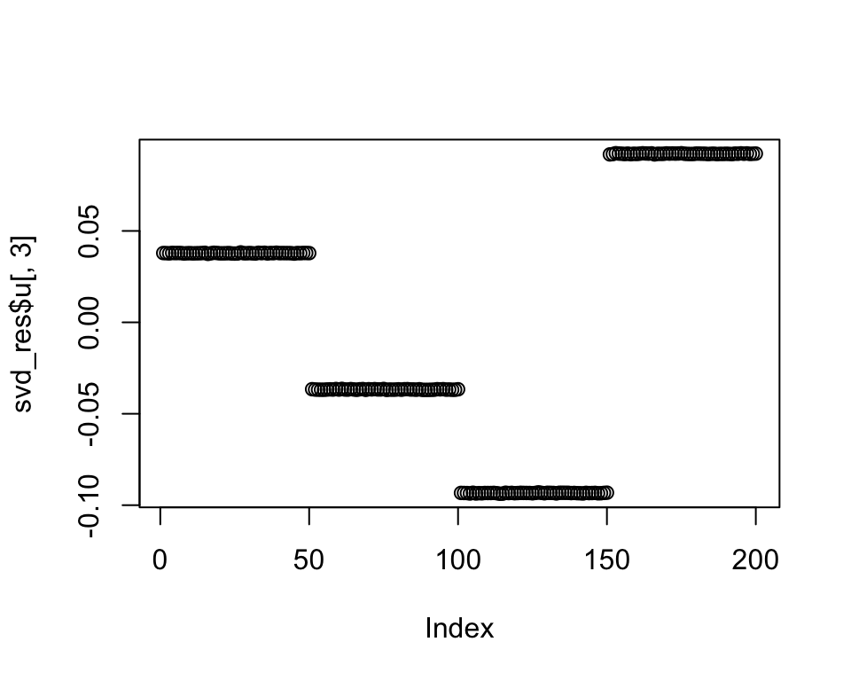
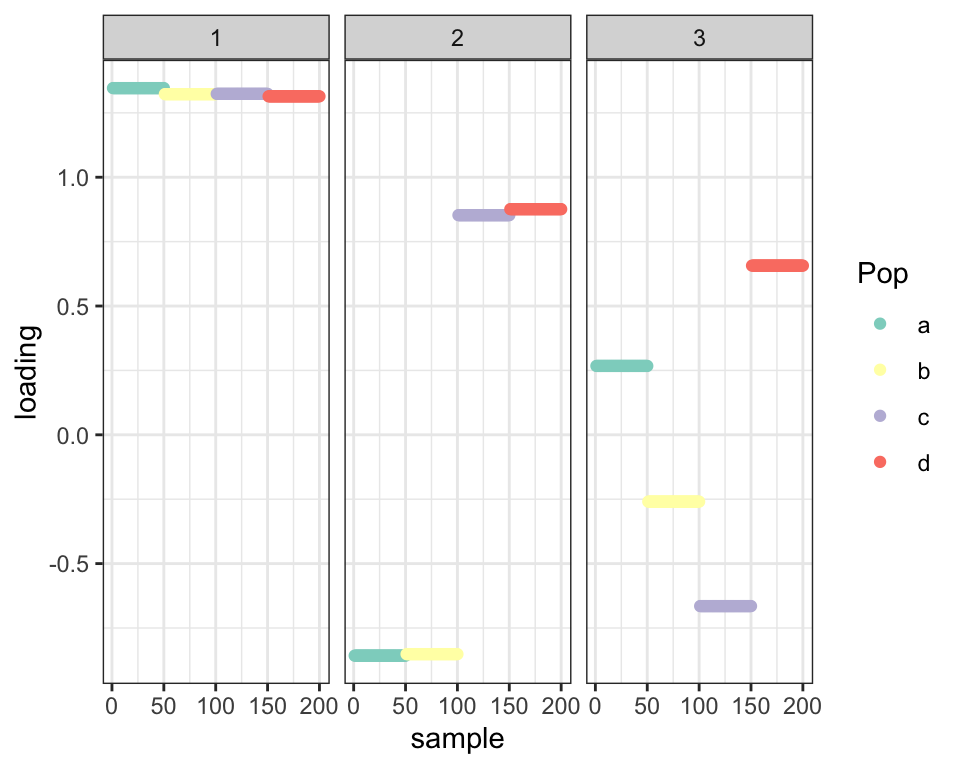
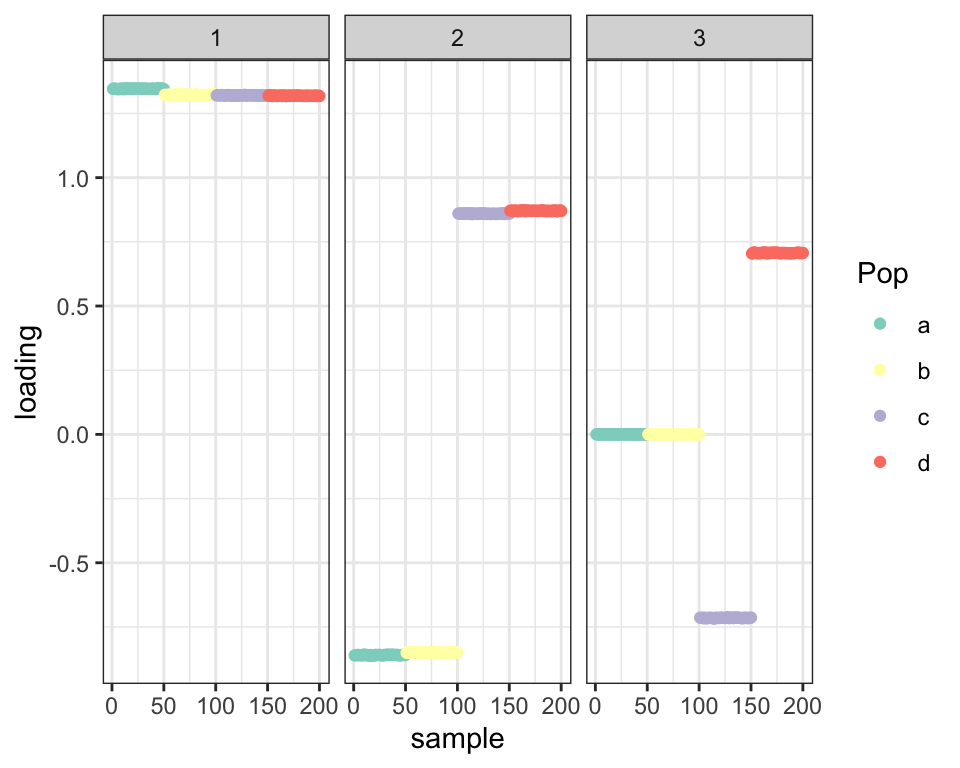

Revisiting prior families for trees: Part XI
Jason Willwerscheid
7/22/2020
Last updated: 2020-09-05
Checks: 6 0
Knit directory: drift-workflow/analysis/
This reproducible R Markdown analysis was created with workflowr (version 1.2.0). The Report tab describes the reproducibility checks that were applied when the results were created. The Past versions tab lists the development history.
Great! Since the R Markdown file has been committed to the Git repository, you know the exact version of the code that produced these results.
Great job! The global environment was empty. Objects defined in the global environment can affect the analysis in your R Markdown file in unknown ways. For reproduciblity it’s best to always run the code in an empty environment.
The command set.seed(20190211) was run prior to running the code in the R Markdown file. Setting a seed ensures that any results that rely on randomness, e.g. subsampling or permutations, are reproducible.
Great job! Recording the operating system, R version, and package versions is critical for reproducibility.
Nice! There were no cached chunks for this analysis, so you can be confident that you successfully produced the results during this run.
Great! You are using Git for version control. Tracking code development and connecting the code version to the results is critical for reproducibility. The version displayed above was the version of the Git repository at the time these results were generated.
Note that you need to be careful to ensure that all relevant files for the analysis have been committed to Git prior to generating the results (you can use wflow_publish or wflow_git_commit). workflowr only checks the R Markdown file, but you know if there are other scripts or data files that it depends on. Below is the status of the Git repository when the results were generated:
Ignored files:
Ignored: .DS_Store
Ignored: .Rhistory
Ignored: .Rproj.user/
Ignored: docs/.DS_Store
Ignored: docs/assets/.DS_Store
Ignored: output/
Untracked files:
Untracked: analysis/extrapolate3.Rmd
Untracked: analysis/extrapolate4.Rmd
Untracked: analysis/pm1_priors_tmp.Rmd
Unstaged changes:
Modified: analysis/tree_literature.Rmd
Modified: drift-workflow.Rproj
Note that any generated files, e.g. HTML, png, CSS, etc., are not included in this status report because it is ok for generated content to have uncommitted changes.
These are the previous versions of the R Markdown and HTML files. If you’ve configured a remote Git repository (see ?wflow_git_remote), click on the hyperlinks in the table below to view them.
| File | Version | Author | Date | Message |
|---|---|---|---|---|
| Rmd | 3f347fa | Jason Willwerscheid | 2020-09-05 | wflow_publish(“analysis/pm1_priors11.Rmd”) |
| html | ac40b3b | Jason Willwerscheid | 2020-09-03 | Build site. |
| Rmd | 40bd6e1 | Jason Willwerscheid | 2020-09-03 | workflowr::wflow_publish(“analysis/pm1_priors11.Rmd”) |
| html | f2b82dc | Jason Willwerscheid | 2020-09-03 | Build site. |
| Rmd | 688d5fa | Jason Willwerscheid | 2020-09-03 | wflow_publish(“analysis/pm1_priors11.Rmd”) |
suppressMessages({
library(flashier)
library(drift.alpha)
library(tidyverse)
})I run some more experiments on the balanced tree with four populations of equal sizes to try to get a better understanding of what’s going on.
sim_tree <- function(n_range,
p = 10000,
branch_means,
branch_sds,
resid_sd = 0.1,
admix_pops = NULL,
outgroup = FALSE,
seed = 666) {
set.seed(seed)
depth <- length(branch_means)
npop_pure <- 2^(depth - 1)
if (is.null(admix_pops)) {
admix_pops <- matrix(nrow = 0, ncol = 0)
}
npop_admix <- ncol(admix_pops)
npop <- npop_pure + npop_admix + outgroup
if (length(n_range) == 1) {
n <- rep(n_range, npop)
} else {
n <- sample(30:100, npop, replace = TRUE)
}
K <- 2^depth - 1
FF <- matrix(nrow = p, ncol = K)
k <- 1
for (d in 1:depth) {
for (i in 1:(2^(d - 1))) {
FF[, k] <- rnorm(p, sd = branch_means[d] + rnorm(1, sd = branch_sds[d]))
k <- k + 1
}
}
tree_mat <- matrix(0, nrow = npop_pure, ncol = K)
k <- 1
for (d in 1:depth) {
size <- 2^(depth - d)
for (i in 1:(2^(d - 1))) {
tree_mat[((i - 1) * size + 1):(i * size), k] <- 1
k <- k + 1
}
}
pop_means <- FF %*% t(tree_mat)
if (npop_admix > 0) {
pop_means <- cbind(pop_means, pop_means %*% admix_pops)
}
if (outgroup) {
pop_means <- cbind(pop_means, rnorm(p, mean = 0, sd = sqrt(sum(branch_sds^2))))
}
Y <- NULL
for (i in 1:npop) {
Y <- rbind(Y, matrix(pop_means[, i], nrow = n[i], ncol = p, byrow = TRUE))
}
Y <- Y + rnorm(sum(n) * p, sd = resid_sd)
plot_fl <- function(fl) {
dr <- init_from_flash(fl)
sd <- sqrt(dr$prior_s2)
L <- dr$EL
LDsqrt <- L %*% diag(sd)
K <- ncol(LDsqrt)
plot_loadings(LDsqrt[,1:K], rep(letters[1:npop], n)) +
scale_color_brewer(palette="Set3")
}
return(list(Y = Y, plot_fn = plot_fl))
}
init.mean.factor <- function(resids, zero.idx) {
u <- matrix(1, nrow = nrow(resids), ncol = 1)
u[zero.idx, 1] <- 0
v <- t(solve(crossprod(u), crossprod(u, resids)))
return(list(u, v))
}
balanced_4pop <- sim_tree(n_range = 50,
p = 10000,
branch_means = rep(1, 3),
branch_sds = rep(0, 3),
resid_sd = 0.1)In an earlier analysis, I needed to do a backfit in order to find sparse third and fourth factors via rotation. Ideally, though, the greedy approach would be able to find a sparse third factor. But it doesn’t:
fl_pl <- flash.init(balanced_4pop$Y) %>%
flash.set.verbose(0) %>%
flash.add.greedy(Kmax = 3,
prior.family = c(prior.point.laplace(), prior.normal())) %>%
flash.backfit(tol = 1e-4, verbose.lvl = 0)
balanced_4pop$plot_fn(fl_pl)
| Version | Author | Date |
|---|---|---|
| f2b82dc | Jason Willwerscheid | 2020-09-03 |
This is not a convergence issue: if I initialize to a sparse factor (by, for example, keeping only the first three factors from the fit from the previous analysis), I get the same result:
fl_pl2 <- flash.init(balanced_4pop$Y) %>%
flash.set.verbose(0) %>%
flash.add.greedy(Kmax = 4,
prior.family = c(prior.point.laplace(), prior.normal())) %>%
flash.backfit(tol = 1e-4, verbose.lvl = 0)
fl_pl3 <- fl_pl2 %>%
flash.remove.factors(kset = 4) %>%
flash.backfit(tol = 1e-4, verbose.lvl = 0)
balanced_4pop$plot_fn(fl_pl3)
| Version | Author | Date |
|---|---|---|
| f2b82dc | Jason Willwerscheid | 2020-09-03 |
What’s happening is that we’re getting the third principal component and there’s a sufficiently large gap between the third and fourth singular values for the non-sparse third PC to be preferred to a sparse linear combination of the third and fourth PCs.
svd_res <- svd(balanced_4pop$Y)
cat("First four singular values:", round(svd_res$d[1:4]))#> First four singular values: 1877 1216 713 694The third PC appears as follows:
plot(svd_res$u[, 3])
| Version | Author | Date |
|---|---|---|
| f2b82dc | Jason Willwerscheid | 2020-09-03 |
This is not due to residual noise, but (I think) to the fact that the simulated branches aren’t exactly orthogonal. If I remove the noise altogether, I get the same result:
balanced_4pop_smallsd <- sim_tree(n_range = 50,
p = 10000,
branch_means = rep(1, 3),
branch_sds = rep(0, 3),
resid_sd = 0)
fl_pl4 <- flash.init(balanced_4pop_smallsd$Y) %>%
flash.set.verbose(0) %>%
flash.add.greedy(Kmax = 3,
prior.family = c(prior.point.laplace(), prior.normal())) %>%
flash.backfit(tol = 1e-4, verbose.lvl = 0)
balanced_4pop$plot_fn(fl_pl4)
| Version | Author | Date |
|---|---|---|
| f2b82dc | Jason Willwerscheid | 2020-09-03 |
If I force the prior to put some mass on the pointmass at zero (here, I fix the mixture proportions at c(0.5, 0.5)), I again get the same result:
g <- ebnm::laplacemix(pi = c(0.5, 0.5), mean = c(0, 0), scale = c(0, 1))
fl_pl5 <- flash.init(balanced_4pop$Y) %>%
flash.set.verbose(0) %>%
flash.add.greedy(Kmax = 3,
prior.family = c(prior.point.laplace(g_init = g, fix_g = TRUE),
prior.normal())) %>%
flash.backfit(tol = 1e-4, verbose.lvl = 0)
balanced_4pop$plot_fn(fl_pl5)
| Version | Author | Date |
|---|---|---|
| f2b82dc | Jason Willwerscheid | 2020-09-03 |
The result is the same if I use a sparse initialization. I show the initialization and details for 25 iterations, which is sufficient to get to a non-sparse solution:
fl_pl6 <- flash.init(balanced_4pop$Y) %>%
flash.set.verbose(0) %>%
flash.add.greedy(Kmax = 4,
prior.family = c(prior.point.laplace(g_init = g, fix_g = TRUE),
prior.normal())) %>%
flash.backfit(tol = 1e-3, verbose.lvl = 0) %>%
flash.remove.factors(kset = 4)
balanced_4pop$plot_fn(fl_pl6)
| Version | Author | Date |
|---|---|---|
| ac40b3b | Jason Willwerscheid | 2020-09-03 |
verbose.fns <- c(flashier:::calc.obj.diff,
function(new, old, k) {
round(sum(flashier:::get.KL(new, n = 1)))
},
function(new, old, k) {
round(sum(flashier:::get.KL(new, n = 2)))
},
function(new, old, k) {
round(flashier:::get.obj(new) -
sum(flashier:::get.KL(new, n = 1)) -
sum(flashier:::get.KL(new, n = 2)))
})
verbose.colnames <- c("ELBO diff", "KL-div (L)", "KL-div (F)", "fit (llik)")
verbose.colwidths <- c(12, 14, 14, 14)
fl_pl7 <- fl_pl6 %>%
flash.set.verbose(3, verbose.fns, verbose.colnames, verbose.colwidths) %>%
flash.backfit(tol = 1e-4, verbose.lvl = 3, maxiter = 25)#> Backfitting 3 factors (tolerance: 1.00e-04)...
#> Iteration Factor ELBO diff KL-div (L) KL-div (F) fit (llik)
#> 1 all 3.48e+04 -3273 -94552 -1476575
#> 2 all 4.28e+02 -3542 -94231 -1476199
#> 3 all 9.53e+02 -3592 -94354 -1475073
#> 4 all 1.11e+03 -3598 -94385 -1473930
#> 5 all 1.20e+03 -3605 -94411 -1472694
#> 6 all 1.26e+03 -3613 -94441 -1471393
#> 7 all 1.21e+03 -3623 -94471 -1470144
#> 8 all 6.68e+02 -3635 -94497 -1469439
#> 9 all 2.24e-02 -3634 -94480 -1469457
#> 10 all 1.76e-02 -3634 -94479 -1469457
#> 11 all 2.35e-02 -3634 -94480 -1469457
#> 12 all 2.92e-02 -3634 -94480 -1469457
#> 13 all 3.16e-02 -3634 -94480 -1469457
#> 14 all 9.80e-03 -3634 -94480 -1469457
#> 15 all 2.96e-03 -3634 -94480 -1469457
#> 16 all 5.46e-03 -3634 -94480 -1469457
#> 17 all 8.18e-03 -3634 -94480 -1469457
#> 18 all 1.17e-02 -3634 -94480 -1469457
#> 19 all 1.61e-02 -3634 -94480 -1469457
#> 20 all 1.41e-02 -3634 -94480 -1469457
#> 21 all 2.19e-03 -3634 -94480 -1469457
#> 22 all 4.07e-03 -3634 -94480 -1469457
#> 23 all 6.16e-03 -3634 -94480 -1469457
#> 24 all 8.97e-03 -3634 -94480 -1469457
#> 25 all 1.27e-02 -3634 -94480 -1469457
#> --Maximum number of iterations reached!
#> Backfit complete. Objective: -1567570.423
#> Wrapping up...
#> Done.
balanced_4pop$plot_fn(fl_pl7)
| Version | Author | Date |
|---|---|---|
| ac40b3b | Jason Willwerscheid | 2020-09-03 |
There doesn’t appear to be a good way to get a sparse third factor using a greedy approach. Backfitting might be necessary.
Appendix
For contrast, I show the per-iteration progress for the four-factor backfit:
fl_bf <- flash.init(balanced_4pop$Y) %>%
flash.set.verbose(0) %>%
flash.add.greedy(Kmax = 4,
prior.family = c(prior.point.laplace(), prior.normal())) %>%
flash.set.verbose(3, verbose.fns, verbose.colnames, verbose.colwidths) %>%
flash.backfit(tol = 1e-4)#> Backfitting 4 factors (tolerance: 1.00e-04)...
#> Iteration Factor ELBO diff KL-div (L) KL-div (F) fit (llik)
#> 1 all 6.34e+05 -5176 -171337 1746838
#> 2 all 5.91e+03 -5539 -189448 1771222
#> 3 all 3.74e+02 -5466 -185796 1767871
#> 4 all 3.20e+00 -5458 -185393 1767464
#> 5 all 4.16e-02 -5459 -185427 1767498
#> 6 all 2.82e-03 -5459 -185435 1767507
#> 7 all 1.90e-03 -5459 -185435 1767506
#> 8 all 3.12e-03 -5459 -185434 1767506
#> 9 all 5.89e-03 -5459 -185434 1767506
#> 10 all 1.21e-02 -5459 -185434 1767506
#> 11 all 2.44e-02 -5459 -185434 1767506
#> 12 all 4.92e-02 -5459 -185434 1767506
#> 13 all 9.88e-02 -5459 -185434 1767506
#> 14 all 1.98e-01 -5459 -185434 1767506
#> 15 all 3.98e-01 -5458 -185434 1767506
#> 16 all 8.03e-01 -5457 -185434 1767506
#> 17 all 1.63e+00 -5456 -185434 1767506
#> 18 all 3.35e+00 -5452 -185435 1767506
#> 19 all 6.83e+00 -5445 -185435 1767506
#> 20 all 3.53e+00 -5428 -185447 1767505
#> 21 all 2.95e+00 -5428 -185445 1767506
#> 22 all 1.92e-02 -5428 -185445 1767506
#> 23 all 3.26e-02 -5428 -185445 1767506
#> 24 all 5.63e-02 -5428 -185445 1767506
#> 25 all 1.06e-01 -5428 -185445 1767506
#> 26 all 2.20e-01 -5428 -185445 1767506
#> 27 all 4.42e-01 -5428 -185445 1767506
#> 28 all 8.60e-01 -5428 -185444 1767506
#> 29 all 1.60e+00 -5428 -185442 1767506
#> 30 all 2.70e+00 -5428 -185440 1767506
#> 31 all 3.36e+00 -5427 -185437 1767506
#> 32 all 1.33e-03 -5427 -185437 1767506
#> 33 all 2.66e-03 -5427 -185437 1767506
#> 34 all 4.51e-03 -5427 -185437 1767506
#> 35 all 7.81e-03 -5427 -185437 1767506
#> 36 all 1.48e-02 -5427 -185437 1767506
#> 37 all 3.08e-02 -5427 -185437 1767506
#> 38 all 6.24e-02 -5427 -185437 1767506
#> 39 all 1.24e-01 -5427 -185437 1767506
#> 40 all 2.41e-01 -5427 -185437 1767506
#> 41 all 4.52e-01 -5427 -185436 1767506
#> 42 all 7.78e-01 -5426 -185436 1767506
#> 43 all 1.05e+00 -5425 -185436 1767506
#> 44 all 6.14e-02 -5423 -185438 1767506
#> 45 all 3.34e-03 -5423 -185438 1767506
#> 46 all 6.67e-03 -5423 -185438 1767506
#> 47 all 1.13e-02 -5423 -185438 1767506
#> 48 all 1.96e-02 -5423 -185438 1767506
#> 49 all 3.69e-02 -5423 -185438 1767506
#> 50 all 7.65e-02 -5423 -185438 1767506
#> 51 all 1.54e-01 -5423 -185438 1767506
#> 52 all 3.00e-01 -5423 -185437 1767506
#> 53 all 5.59e-01 -5423 -185437 1767506
#> 54 all 9.50e-01 -5423 -185436 1767506
#> 55 all 1.22e+00 -5422 -185436 1767506
#> 56 all 8.81e-04 -5422 -185436 1767506
#> 57 all 1.77e-03 -5422 -185436 1767506
#> 58 all 3.00e-03 -5422 -185436 1767506
#> 59 all 5.20e-03 -5422 -185436 1767506
#> 60 all 9.86e-03 -5422 -185436 1767506
#> 61 all 2.06e-02 -5422 -185436 1767506
#> 62 all 4.18e-02 -5422 -185436 1767506
#> 63 all 8.39e-02 -5422 -185436 1767506
#> 64 all 1.66e-01 -5422 -185436 1767506
#> 65 all 3.22e-01 -5422 -185436 1767506
#> 66 all 6.04e-01 -5421 -185435 1767506
#> 67 all 1.04e+00 -5420 -185435 1767506
#> 68 all 1.43e+00 -5418 -185436 1767506
#> 69 all 2.33e-01 -5414 -185440 1767506
#> 70 all 7.49e-03 -5414 -185440 1767506
#> 71 all 1.49e-02 -5414 -185440 1767506
#> 72 all 2.53e-02 -5414 -185440 1767506
#> 73 all 4.38e-02 -5414 -185440 1767506
#> 74 all 8.26e-02 -5414 -185440 1767506
#> 75 all 1.70e-01 -5414 -185440 1767506
#> 76 all 3.40e-01 -5414 -185440 1767506
#> 77 all 6.56e-01 -5413 -185439 1767506
#> 78 all 1.19e+00 -5413 -185438 1767506
#> 79 all 1.88e+00 -5413 -185437 1767506
#> 80 all 1.74e+00 -5412 -185435 1767506
#> 81 all 1.24e-03 -5412 -185435 1767506
#> 82 all 2.48e-03 -5412 -185435 1767506
#> 83 all 4.21e-03 -5412 -185435 1767506
#> 84 all 7.29e-03 -5412 -185435 1767506
#> 85 all 1.38e-02 -5412 -185435 1767506
#> 86 all 2.87e-02 -5412 -185435 1767506
#> 87 all 5.82e-02 -5412 -185435 1767506
#> 88 all 1.16e-01 -5412 -185435 1767506
#> 89 all 2.24e-01 -5412 -185435 1767506
#> 90 all 4.17e-01 -5412 -185435 1767506
#> 91 all 7.05e-01 -5411 -185435 1767506
#> 92 all 8.96e-01 -5410 -185435 1767506
#> 93 all 1.44e-03 -5410 -185435 1767506
#> 94 all 2.88e-03 -5410 -185435 1767506
#> 95 all 4.89e-03 -5410 -185435 1767506
#> 96 all 8.47e-03 -5410 -185435 1767506
#> 97 all 1.60e-02 -5410 -185435 1767506
#> 98 all 3.32e-02 -5410 -185435 1767506
#> 99 all 6.70e-02 -5410 -185435 1767506
#> 100 all 1.32e-01 -5410 -185435 1767506
#> 101 all 2.52e-01 -5410 -185435 1767506
#> 102 all 4.51e-01 -5409 -185435 1767506
#> 103 all 6.85e-01 -5409 -185435 1767506
#> 104 all 5.06e-01 -5407 -185436 1767506
#> 105 all 2.19e-03 -5407 -185436 1767506
#> 106 all 4.37e-03 -5407 -185436 1767506
#> 107 all 7.41e-03 -5407 -185436 1767506
#> 108 all 1.28e-02 -5407 -185436 1767506
#> 109 all 2.42e-02 -5407 -185436 1767506
#> 110 all 5.01e-02 -5407 -185436 1767506
#> 111 all 1.00e-01 -5407 -185436 1767506
#> 112 all 1.95e-01 -5407 -185436 1767506
#> 113 all 3.62e-01 -5407 -185435 1767506
#> 114 all 6.06e-01 -5407 -185435 1767506
#> 115 all 7.33e-01 -5406 -185435 1767506
#> 116 all 9.54e-04 -5406 -185435 1767506
#> 117 all 1.91e-03 -5406 -185435 1767506
#> 118 all 3.24e-03 -5406 -185435 1767506
#> 119 all 5.62e-03 -5406 -185435 1767506
#> 120 all 1.07e-02 -5406 -185435 1767506
#> 121 all 2.22e-02 -5406 -185435 1767506
#> 122 all 4.53e-02 -5406 -185435 1767506
#> 123 all 9.11e-02 -5406 -185435 1767506
#> 124 all 1.81e-01 -5406 -185435 1767506
#> 125 all 3.56e-01 -5405 -185435 1767506
#> 126 all 6.85e-01 -5405 -185435 1767506
#> 127 all 1.26e+00 -5403 -185435 1767506
#> 128 all 2.05e+00 -5401 -185436 1767506
#> 129 all 2.26e+00 -5395 -185439 1767506
#> 130 all 8.03e-03 -5395 -185439 1767506
#> 131 all 1.60e-02 -5395 -185439 1767506
#> 132 all 2.72e-02 -5395 -185439 1767506
#> 133 all 4.69e-02 -5395 -185439 1767506
#> 134 all 8.83e-02 -5395 -185439 1767506
#> 135 all 1.82e-01 -5395 -185439 1767506
#> 136 all 3.62e-01 -5395 -185439 1767506
#> 137 all 6.91e-01 -5395 -185438 1767506
#> 138 all 1.23e+00 -5394 -185437 1767506
#> 139 all 1.83e+00 -5394 -185436 1767506
#> 140 all 1.12e+00 -5393 -185435 1767506
#> 141 all 1.47e-03 -5393 -185435 1767506
#> 142 all 2.94e-03 -5393 -185435 1767506
#> 143 all 5.00e-03 -5393 -185435 1767506
#> 144 all 8.66e-03 -5393 -185435 1767506
#> 145 all 1.64e-02 -5393 -185435 1767506
#> 146 all 3.41e-02 -5393 -185435 1767506
#> 147 all 6.90e-02 -5393 -185435 1767506
#> 148 all 1.37e-01 -5393 -185435 1767506
#> 149 all 2.65e-01 -5393 -185435 1767506
#> 150 all 4.92e-01 -5392 -185435 1767506
#> 151 all 8.25e-01 -5392 -185435 1767506
#> 152 all 1.01e+00 -5390 -185436 1767506
#> 153 all 2.09e-03 -5390 -185436 1767506
#> 154 all 4.17e-03 -5390 -185436 1767506
#> 155 all 7.08e-03 -5390 -185436 1767506
#> 156 all 1.23e-02 -5390 -185436 1767506
#> 157 all 2.32e-02 -5390 -185436 1767506
#> 158 all 4.80e-02 -5390 -185436 1767506
#> 159 all 9.66e-02 -5390 -185436 1767506
#> 160 all 1.89e-01 -5390 -185435 1767506
#> 161 all 3.58e-01 -5390 -185435 1767506
#> 162 all 6.25e-01 -5389 -185435 1767506
#> 163 all 8.85e-01 -5388 -185435 1767506
#> 164 all 3.05e-01 -5387 -185437 1767506
#> 165 all 3.43e-03 -5387 -185437 1767506
#> 166 all 6.86e-03 -5387 -185437 1767506
#> 167 all 1.16e-02 -5387 -185437 1767506
#> 168 all 2.01e-02 -5387 -185437 1767506
#> 169 all 3.79e-02 -5386 -185436 1767506
#> 170 all 7.85e-02 -5386 -185436 1767506
#> 171 all 1.57e-01 -5386 -185436 1767506
#> 172 all 3.04e-01 -5386 -185436 1767506
#> 173 all 5.58e-01 -5386 -185436 1767506
#> 174 all 9.09e-01 -5386 -185435 1767506
#> 175 all 9.81e-01 -5385 -185435 1767506
#> 176 all 1.28e-03 -5385 -185435 1767506
#> 177 all 2.57e-03 -5385 -185435 1767506
#> 178 all 4.36e-03 -5385 -185435 1767506
#> 179 all 7.56e-03 -5385 -185435 1767506
#> 180 all 1.43e-02 -5385 -185435 1767506
#> 181 all 2.99e-02 -5385 -185435 1767506
#> 182 all 6.09e-02 -5385 -185435 1767506
#> 183 all 1.22e-01 -5385 -185435 1767506
#> 184 all 2.42e-01 -5384 -185435 1767506
#> 185 all 4.74e-01 -5384 -185435 1767506
#> 186 all 8.98e-01 -5383 -185435 1767506
#> 187 all 1.60e+00 -5381 -185435 1767506
#> 188 all 2.39e+00 -5377 -185437 1767506
#> 189 all 1.59e+00 -5370 -185443 1767506
#> 190 all 1.34e-02 -5370 -185443 1767506
#> 191 all 2.68e-02 -5370 -185443 1767506
#> 192 all 4.54e-02 -5370 -185443 1767506
#> 193 all 7.84e-02 -5370 -185443 1767506
#> 194 all 1.48e-01 -5370 -185442 1767506
#> 195 all 3.04e-01 -5370 -185442 1767506
#> 196 all 6.04e-01 -5370 -185442 1767506
#> 197 all 1.15e+00 -5370 -185441 1767506
#> 198 all 2.04e+00 -5369 -185439 1767506
#> 199 all 3.00e+00 -5369 -185436 1767506
#> 200 all 1.64e+00 -5368 -185436 1767506
#> 201 all 2.14e-03 -5368 -185436 1767506
#> 202 all 4.27e-03 -5368 -185436 1767506
#> 203 all 7.25e-03 -5368 -185436 1767506
#> 204 all 1.26e-02 -5368 -185436 1767506
#> 205 all 2.37e-02 -5368 -185436 1767506
#> 206 all 4.94e-02 -5368 -185436 1767506
#> 207 all 9.97e-02 -5368 -185436 1767506
#> 208 all 1.97e-01 -5368 -185436 1767506
#> 209 all 3.80e-01 -5367 -185435 1767506
#> 210 all 6.93e-01 -5367 -185435 1767506
#> 211 all 1.12e+00 -5366 -185435 1767506
#> 212 all 1.16e+00 -5363 -185436 1767506
#> 213 all 3.17e-03 -5363 -185436 1767506
#> 214 all 6.32e-03 -5363 -185436 1767506
#> 215 all 1.07e-02 -5363 -185436 1767506
#> 216 all 1.86e-02 -5363 -185436 1767506
#> 217 all 3.51e-02 -5363 -185436 1767506
#> 218 all 7.26e-02 -5363 -185436 1767506
#> 219 all 1.46e-01 -5363 -185436 1767506
#> 220 all 2.85e-01 -5363 -185436 1767506
#> 221 all 5.34e-01 -5363 -185436 1767506
#> 222 all 9.16e-01 -5362 -185435 1767506
#> 223 all 1.21e+00 -5361 -185435 1767506
#> 224 all 1.59e-03 -5361 -185435 1767506
#> 225 all 3.17e-03 -5361 -185435 1767506
#> 226 all 5.39e-03 -5361 -185435 1767506
#> 227 all 9.34e-03 -5361 -185435 1767506
#> 228 all 1.77e-02 -5361 -185435 1767506
#> 229 all 3.70e-02 -5361 -185435 1767506
#> 230 all 7.54e-02 -5361 -185435 1767506
#> 231 all 1.52e-01 -5361 -185435 1767506
#> 232 all 3.03e-01 -5361 -185435 1767506
#> 233 all 5.99e-01 -5360 -185435 1767506
#> 234 all 1.16e+00 -5359 -185435 1767506
#> 235 all 1.36e+00 -5357 -185436 1767506
#> 236 all 2.09e-03 -5357 -185436 1767506
#> 237 all 4.17e-03 -5357 -185436 1767506
#> 238 all 7.06e-03 -5357 -185436 1767506
#> 239 all 1.22e-02 -5357 -185436 1767506
#> 240 all 2.17e+02 -5005 -185435 1767371
#> 241 all 1.74e+02 -4952 -185433 1767489
#> 242 all 5.10e-01 -4952 -185438 1767494
#> 243 all 1.43e+01 -4952 -185435 1767506
#> 244 all 1.55e-02 -4952 -185436 1767507
#> 245 all 1.34e-02 -4952 -185436 1767506
#> 246 all 2.43e-02 -4952 -185435 1767506
#> 247 all 1.87e+01 -4932 -185435 1767505
#> 248 all 1.35e+02 -4798 -185435 1767507
#> 249 all 2.09e+00 -4798 -185435 1767509
#> 250 all 2.06e-03 -4799 -185435 1767509
#> 251 all 5.12e-04 -4799 -185436 1767509
#> 252 all 7.19e-04 -4798 -185435 1767509
#> 253 all 8.78e-04 -4798 -185435 1767509
#> 254 all 1.13e-03 -4798 -185435 1767509
#> 255 all 1.53e-03 -4798 -185435 1767509
#> 256 all 2.27e-03 -4798 -185435 1767509
#> 257 all 3.75e-03 -4798 -185435 1767509
#> 258 all 7.05e-03 -4798 -185435 1767509
#> 259 all 1.43e-02 -4798 -185435 1767509
#> 260 all 2.84e-02 -4798 -185435 1767509
#> 261 all 5.47e-02 -4798 -185435 1767509
#> 262 all 1.00e-01 -4798 -185435 1767509
#> 263 all 1.63e-01 -4798 -185435 1767509
#> 264 all 1.73e-01 -4798 -185436 1767509
#> 265 all 2.26e+02 -4551 -185437 1767490
#> 266 all 3.24e+01 -4543 -185437 1767513
#> 267 all 3.35e-02 -4542 -185438 1767514
#> 268 all 2.71e-01 -4542 -185437 1767514
#> 269 all 3.06e-03 -4542 -185437 1767514
#> 270 all 2.87e-03 -4542 -185437 1767514
#> 271 all 5.58e-03 -4542 -185437 1767514
#> 272 all 1.13e-02 -4542 -185437 1767514
#> 273 all 2.23e-02 -4542 -185437 1767514
#> 274 all 4.30e-02 -4542 -185437 1767514
#> 275 all 7.87e-02 -4542 -185437 1767514
#> 276 all 1.28e-01 -4542 -185437 1767514
#> 277 all 1.36e-01 -4542 -185437 1767514
#> 278 all 2.35e-05 -4542 -185437 1767514
#> Backfit complete. Objective: 1577534.959
#> Wrapping up...
#> Done.
balanced_4pop$plot_fn(fl_bf)
sessionInfo()#> R version 3.5.3 (2019-03-11)
#> Platform: x86_64-apple-darwin15.6.0 (64-bit)
#> Running under: macOS Mojave 10.14.6
#>
#> Matrix products: default
#> BLAS: /Library/Frameworks/R.framework/Versions/3.5/Resources/lib/libRblas.0.dylib
#> LAPACK: /Library/Frameworks/R.framework/Versions/3.5/Resources/lib/libRlapack.dylib
#>
#> locale:
#> [1] en_US.UTF-8/en_US.UTF-8/en_US.UTF-8/C/en_US.UTF-8/en_US.UTF-8
#>
#> attached base packages:
#> [1] stats graphics grDevices utils datasets methods base
#>
#> other attached packages:
#> [1] forcats_0.4.0 stringr_1.4.0 dplyr_0.8.0.1
#> [4] purrr_0.3.2 readr_1.3.1 tidyr_0.8.3
#> [7] tibble_2.1.1 ggplot2_3.2.0 tidyverse_1.2.1
#> [10] drift.alpha_0.0.10 flashier_0.2.7
#>
#> loaded via a namespace (and not attached):
#> [1] Rcpp_1.0.4.6 lubridate_1.7.4 invgamma_1.1
#> [4] lattice_0.20-38 assertthat_0.2.1 rprojroot_1.3-2
#> [7] digest_0.6.18 truncnorm_1.0-8 R6_2.4.0
#> [10] cellranger_1.1.0 plyr_1.8.4 backports_1.1.3
#> [13] evaluate_0.13 httr_1.4.0 pillar_1.3.1
#> [16] rlang_0.4.2 lazyeval_0.2.2 readxl_1.3.1
#> [19] rstudioapi_0.10 ebnm_0.1-21 irlba_2.3.3
#> [22] whisker_0.3-2 Matrix_1.2-15 rmarkdown_1.12
#> [25] labeling_0.3 munsell_0.5.0 mixsqp_0.3-40
#> [28] broom_0.5.1 compiler_3.5.3 modelr_0.1.5
#> [31] xfun_0.6 pkgconfig_2.0.2 SQUAREM_2017.10-1
#> [34] htmltools_0.3.6 tidyselect_0.2.5 workflowr_1.2.0
#> [37] withr_2.1.2 crayon_1.3.4 grid_3.5.3
#> [40] nlme_3.1-137 jsonlite_1.6 gtable_0.3.0
#> [43] git2r_0.25.2 magrittr_1.5 scales_1.0.0
#> [46] cli_1.1.0 stringi_1.4.3 reshape2_1.4.3
#> [49] fs_1.2.7 xml2_1.2.0 generics_0.0.2
#> [52] RColorBrewer_1.1-2 tools_3.5.3 glue_1.3.1
#> [55] hms_0.4.2 parallel_3.5.3 yaml_2.2.0
#> [58] colorspace_1.4-1 ashr_2.2-51 rvest_0.3.4
#> [61] knitr_1.22 haven_2.1.1